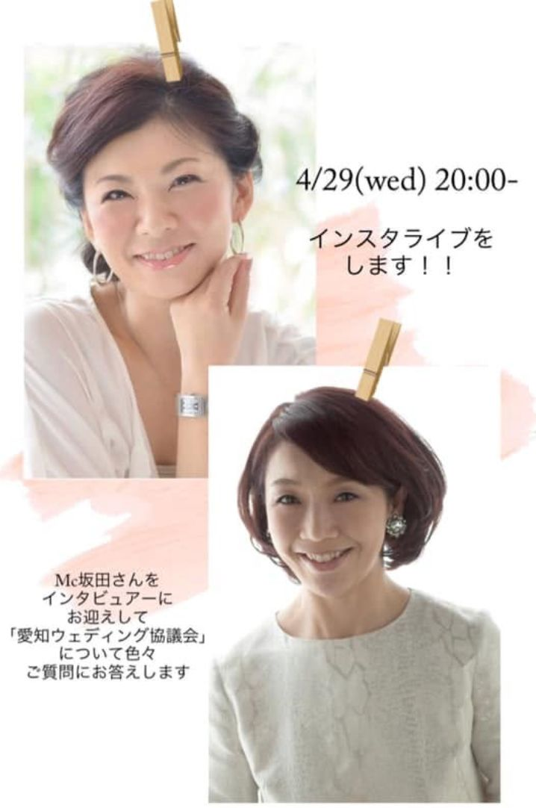

4月29日(水) 20:00より、インスタライブを行います！！

そして、みなさまからの様々な疑問にお答えしていきます。なぜこの時期に協議会が生まれたのか。7人の理事・監事は何を考えて集まったのか。あの陳情書は、どんな経緯で、どんなやり取りを経て県庁に届いたのか——文章ではお伝えしきれなかった舞台裏を、生の言葉でお話しできればと思っています。
既に質問を投げかけてくださっている皆さま、ありがとうございます！ 当日、ひとつずつ丁寧にお答えしてまいります。
協議会副代表の吹原と、ウェディング業界ではみなさまご存知のMC坂田さんをインタビュアーにお迎えして、第1回目を実施します。
聞き手が坂田さんですから、私たちが言葉に詰まるところも、うまく引き出していただけるのではないかと思います。かしこまった報告会ではなく、業界の仲間内で話しているような、そんな時間になれば嬉しいです。
「愛知ウェディング協議会」で検索、またはInstagramアカウント【aichi_wedding.council】をご覧ください。アカウントをフォローいただくと、ライブ開始時に通知が届きます。
祝日の夜のひととき、お手元にお飲み物でもご用意のうえ、ぜひ気軽にご覧ください。当日ご覧になれない方も、ご質問はいつでもお寄せいただけます。DMやコメントでお気軽にどうぞ。